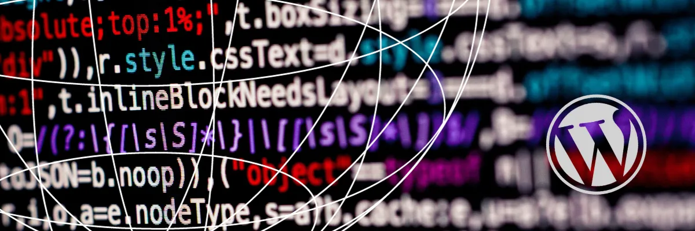

Log something crazy, but intresting.

Why you should not use WordPress?
Date:
WordPress (WP) is the most used content management system in the world. WP has a market share of about 67%. That is huge, I would say WP dominates the CMS world. The next best CMS is Shopify at 6% but I would argue that it is not a complete content system, it is more of an e-commerce space. Then is Wix at 3.8% but that is not an open source. The next open source CMS is Joomla which has a market share of 2.6%. So, if I had to remove WP, 67% of the websites in the world would stop working.
In 2019 there were 61.6% of WordPress sites were using outdated PHP, Even now there are about 5% of sites are yet to be updated. Will it be fair to assume that these people were not technical enough to know how to update? Here again, Hostinger a hosting service provider clearly states;
"WordPress is built on PHP and MySQL. Fortunately, you don't have to worry as you can use WordPress without any knowledge of PHP and MySQL"
This is alarming because people are pushed to use something that they have no knowledge about. Convenience over knowledge. How many of these people actually know where their data is stored? I find it absurd when people write that you are in control of your data when using WordPress. I want to ask a simple question are you capable enough to extract your data from MySQL?
In today's day and age, where you can learn HTML and CSS for free in a day, it will be disastrous to use WordPress. Here I will just put down my reasons why you should not use WordPress;
Complex to Run
Let's assume I want to run a WordPress website, I would require a web server along with MySQL and PHP. Let's not talk about the plugins and themes, let's keep it simple. Now, what do you need to run an HTML website? Just a web server. Then why make things so complex that you don't even know what it is doing? Plugins in WordPress are able to change the core code with a click of a button. Which you do not understand in the first place. There are about 924178 lines for code in just WordPress, you would add more when using plugins. If just have to host a page that says “Hello World!” I only need 10 lines of HTML code.
WordPress is Weak
When it comes to security compared to HTML sites, WordPress is weak. With additional MySQL and PHP, hackers have more freedom to hack. If I host an HTML site and a WordPress site on the same server what will get hacked first? I have personally witnessed my WordPress site getting hacked but never seen an HTML getting affected. WordPress's biggest issue is having a database that is always vulnerable. Keeping data stored in a place where you don't understand how to secure it in the first place is alarming. On top of that according to Sucuri 94.23% of the sites hacked are WordPress. Also if have seen how WP is bombarded with SPAM comments and emails. That is just another way hackers are trying to find a weak point.
Set-Up/ Maintenance
It is not easy to set up and maintain a WP site. You have to continuously keep on updating the WP themes and plugins. It is not easy to migrate WordPress from one server to another. Consider this when I have to move I have to install plugins to do the backup and restore process. Yes, everything looks easy when you are using a cPanel, try to shift to a VPS from cPanel yourself. Then compare this to HTML sites's migration.
It is Not Free
A lot of people argue that WP is open-source and it is free. That is not true, the source code is free but you will still end up paying for your WordPress site. Here I am not talking about domain name and server/hosting. I am talking about endless plugins and themes. WordPress has an ecosystem that generates a good amount of business. General Public License that makes money, I personally have spent money on WordPress.
Third-party dependence
When it comes to running a business website or a blog dependence on a third party is not a viable solution. It adds to the cost and increases the vulnerability of the code. WordPress is highly dependent on third-party codes. Your site is running at the mercy of someone else if they stop updating your site is poised to fail.
My Take on WordPress
WordPress is a great tool to get you started in your online journey. But it is equally important for you to understand the importance of learning and gaining knowledge. I have spoken about the importance of self-developed and self-hosted sites before. WordPress is all about convenience but if security and learning are at risk that should be avoided. There are many other content management systems out in the market where the backend is handled by industry experts limiting your site's vulnerability to hacks. Wix, Squarespace, Ghost are just some examples of paid CMS. There is always an HTML and HUGO way that is free and secure. Yes, it will take time to learn and develop but the end result will be in your favour. You will not be dependent on third-party codes or applications.
I can tell you this from my personal experience, I too have a WordPress blog, but it is also true that I learned to code and build this site from scratch.
HTML will always be the KING when it comes to website development.
|
Share this: |


|

|

|

|

|